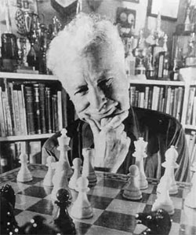

Arpad Elo (1903-1992), physicien hongrois-américain, créateur du système qui porte son nom.
« 1200 Elo, c'est bien ? » « Mon fils est à 900, il progresse ? » « Pour passer de 1500 à 1800, il faut combien de temps ? » Ces questions reviennent sans cesse, et c'est normal : le classement Elo est la mesure universelle du niveau aux échecs. Mais peu de joueurs savent vraiment comment ça marche.
Dans ce guide, on démystifie tout : qui a inventé l'Elo, comment il se calcule (sans formule indigeste), ce que chaque niveau signifie concrètement, et les limites du système. À la fin, tu sauras exactement ce que ton Elo dit de toi — et ce qu'il faut pour franchir le prochain palier.
Sommaire
1. Qui était Arpad Elo ?
Contrairement à ce que pensent beaucoup de joueurs, « Elo » n'est pas un acronyme. C'est le nom de famille d'un homme : Arpad Emrick Elo (1903-1992), physicien hongrois-américain qui enseignait à l'université Marquette dans le Wisconsin.
Elo était lui-même un bon joueur d'échecs (maître américain dans les années 1930-40, avec un Elo estimé autour de 2300). Il était passionné par les mathématiques appliquées, et frustré par le système de classement utilisé à l'époque par la Fédération américaine des échecs, qu'il trouvait imprécis.
Il a donc conçu, dans les années 1950, un nouveau système de classement basé sur les lois de la probabilité — spécifiquement sur la loi normale (en cloche). Son idée : le résultat d'une partie entre deux joueurs peut être prédit de manière probabiliste à partir de leur différence de niveau. Si cette différence est faible, les chances sont proches de 50/50. Si elle est grande, le joueur fort gagne presque systématiquement.
La Fédération américaine (USCF) adopte son système en 1960, puis la FIDE (fédération internationale) en 1970. Aujourd'hui, le système Elo est utilisé non seulement aux échecs, mais aussi au tennis, au football, au baseball, et même comme base de plusieurs algorithmes de matchmaking dans les jeux vidéo.
3. Ce que valent concrètement les différents niveaux
Les chiffres abstraits, c'est bien. Comprendre ce que ça signifie en termes de jeu, c'est mieux. Voici le référentiel des niveaux Elo, avec une description réaliste de chaque palier :
| Elo | Niveau | Caractéristiques |
|---|---|---|
| < 800 | Débutant absolu | Connaît les règles. Laisse des pièces en prise régulièrement. |
| 800 – 1200 | Débutant avancé | Ne gaffe plus le matériel facilement. Commence à voir des tactiques simples. |
| 1200 – 1500 | Intermédiaire | Connaît quelques ouvertures. Reconnaît les motifs tactiques courants. |
| 1500 – 1800 | Joueur de club | Répertoire d'ouverture stable. Calcul correct sur 2-3 coups. |
| 1800 – 2100 | Fort joueur de club | Niveau tournoi sérieux. Compréhension stratégique solide. |
| 2100 – 2300 | Candidat Maître (CM) | Maîtrise technique. Niveau semi-pro. |
| 2300 – 2400 | Maître FIDE (FM) | Titre officiel FIDE. Niveau national. |
| 2400 – 2500 | Maître International (IM) | Titre mondial. Peut vivre des échecs. |
| 2500 – 2700 | Grand Maître (GM) | Titre ultime. ~2000 GM dans le monde. |
| 2700+ | Super-Grand Maître | Top 50 mondial. Candidats au titre mondial. |
Un joueur amateur sérieux qui joue régulièrement et prend des cours peut espérer atteindre 1600-1800 Elo en 2-3 ans. Au-delà, les paliers demandent beaucoup plus d'efforts. Pour plus de détails, lis notre article sur le temps nécessaire pour devenir bon aux échecs.
4. Combien de temps pour progresser de 200 points ?
C'est la question à un million de francs. La réponse dépend de 3 facteurs :
- Ton point de départ. Passer de 800 à 1000 est beaucoup plus rapide que passer de 1800 à 2000.
- Le volume d'entraînement. 1h par jour = progression lente. 2-3h par jour structurées = progression rapide.
- La qualité du travail. 2h de jeu non analysé = peu de progression. 1h de jeu + analyse + étude ciblée = beaucoup.
Comme repère grossier, voici les durées typiques pour gagner +200 points Elo avec un travail régulier et structuré :
- De 800 à 1000 : 2-4 mois
- De 1200 à 1400 : 6-12 mois
- De 1500 à 1700 : 12-18 mois
- De 1800 à 2000 : 2-3 ans
- De 2100 à 2300 : 5-10 ans
- Au-delà de 2300 : une vie entière ou jamais
Le fait qu'il faille de plus en plus de temps pour chaque palier supplémentaire est appelé la loi des rendements décroissants. Elle s'applique à presque tous les domaines de performance.
Si tu stagnes et tu veux des outils concrets, lis notre article sur la stagnation aux échecs et comment la briser.
5. FIDE, Fédé française, lichess, chess.com : pourquoi tes différents Elos ne collent pas
Si tu joues sur plusieurs plateformes, tu as sûrement remarqué : ton Elo lichess ≠ ton Elo chess.com ≠ ton Elo FIDE. C'est normal, et voici pourquoi.
Elo FIDE
Attribué par la Fédération Internationale des Échecs. Le plus « officiel ». Tu le gagnes uniquement en jouant dans des tournois homologués FIDE (cadence lente). La plupart des amateurs n'ont pas d'Elo FIDE car ils n'ont jamais joué ces tournois.
Elo FFE (Fédération française)
Équivalent français, basé sur les tournois homologués par la Fédération Française des Échecs. Utilisé entre clubs en France. Très proche de l'Elo FIDE mais pas identique (les mêmes joueurs peuvent avoir 50-100 points d'écart).
Elo lichess
Un « Glicko » en réalité, pas un Elo pur — un système dérivé qui prend en compte la fiabilité de l'évaluation. Lichess a tendance à gonfler les Elos par rapport à la FIDE : un joueur à 1800 lichess vaut environ 1500 FIDE.
Elo chess.com
Système propriétaire, souvent encore plus gonflé que lichess. Un joueur à 1800 chess.com vaut environ 1450-1500 FIDE.
1500 FIDE ≈ 1600 FFE ≈ 1800 lichess ≈ 1850 chess.com
Ne prends donc pas ton Elo lichess au premier degré si tu veux comparer avec des joueurs de club. Pour une comparaison juste, divise environ par 1,2.
6. Les limites du système Elo
L'Elo est un excellent outil, mais pas parfait. Voici ses trois limites principales :
a. Il mesure la force relative, pas absolue
Un joueur à 2000 Elo en France en 1970 ne joue pas forcément aussi bien qu'un joueur à 2000 Elo en 2026. L'inflation Elo existe — le pool mondial s'est élargi, les méthodes d'entraînement se sont modernisées. Les 2000 d'aujourd'hui jouent mieux que les 2000 d'il y a 50 ans.
b. Il ne capte pas le style
Deux joueurs à 1800 peuvent avoir des jeux radicalement différents : l'un tactique et agressif, l'autre positionnel et patient. L'Elo ne dit rien de ça.
c. Il réagit lentement aux progrès récents
Si tu fais un gros bond en qualité de jeu (par exemple après un stage intensif), ton Elo mettra 20-30 parties à rattraper ta vraie force. Entre-temps, tu battras des joueurs « plus forts que toi sur le papier ».
7. Les Elos record de l'histoire
Pour mettre les choses en perspective, voici quelques records mémorables :
- Magnus Carlsen, 2882 Elo (mai 2014) — plus haut Elo jamais atteint par un joueur humain. Record encore en vigueur.
- Garry Kasparov, 2851 Elo (juillet 1999) — le record précédent, tenu pendant 14 ans.
- Bobby Fischer, 2785 Elo (1972) — au moment du match du siècle contre Spassky.
- Judit Polgár, 2735 Elo (2005) — plus haut Elo jamais atteint par une femme. Voir notre article sur Judit Polgár.
- Maxime Vachier-Lagrave, 2819 Elo (2016) — plus haut Elo jamais atteint par un Français. Lire notre portrait de MVL.
Un humain vs un moteur d'échecs moderne (Stockfish, AlphaZero) ? Les moteurs dépassent aujourd'hui les 3500 Elo — des centaines de points au-dessus du meilleur humain de l'histoire. C'est pour ça que plus aucun champion ne joue sérieusement contre un ordinateur depuis 2005.
Ce qu'il faut retenir
Le classement Elo est une mesure probabiliste inventée par Arpad Elo en 1960. Il dit, en moyenne, à quel point un joueur est plus fort qu'un autre — mais ne dit rien du style, de la forme du moment, ou de ton potentiel d'amélioration.
Règles d'or :
- +200 Elo = ~76 % de victoires pour le plus fort.
- +400 Elo = victoire quasi-systématique pour le plus fort.
- Un Elo lichess/chess.com est surgonflé de ~150-200 points vs FIDE.
- Chaque palier de +200 Elo demande plus de temps que le précédent (loi des rendements décroissants).
- Le record du meilleur Elo humain jamais atteint est 2882 (Magnus Carlsen, 2014).
Si ton Elo t'obsède, rappelle-toi qu'il n'est qu'un indicateur de sortie. Ce qui compte vraiment, c'est la qualité de ton travail : ouvertures, tactiques, analyse de tes parties, prise de décision. Le reste suit.
Pour aller plus loin :
2. Comment ça marche (sans les maths)
Le principe est simple :
En pratique, une partie à un tournoi te fait généralement gagner ou perdre entre 5 et 15 points Elo, selon la différence avec ton adversaire et le résultat.
La règle du +200
C'est l'une des règles clés du système : une différence de 200 points Elo signifie que le joueur le plus fort gagnera environ 76 % des parties. Au-delà de 400 points d'écart, le joueur le plus fort gagne quasi-systématiquement (> 90 %).
Autrement dit, si tu es classé 1500 et ton ami est classé 1100, tu n'as presque aucune chance de perdre contre lui — mais lui gagne quand même ~10 % de vos parties, donc il continue à apprendre à tes côtés.
Le coefficient K
Un détail technique pour les curieux : l'ampleur des variations Elo dépend d'un coefficient appelé K. Plus le K est élevé, plus les Elos bougent vite. À la FIDE :